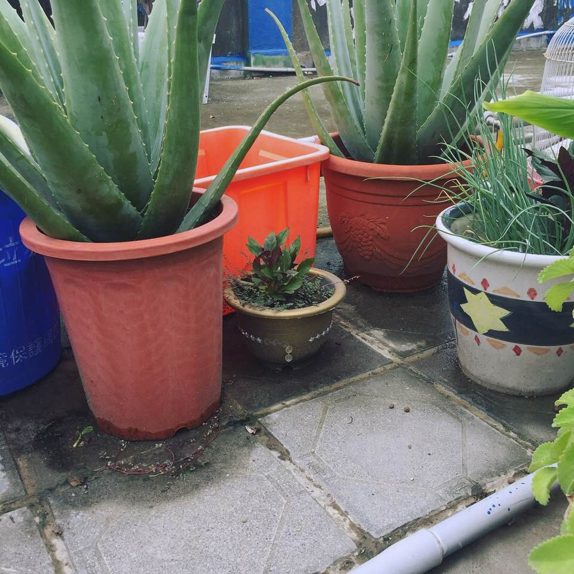
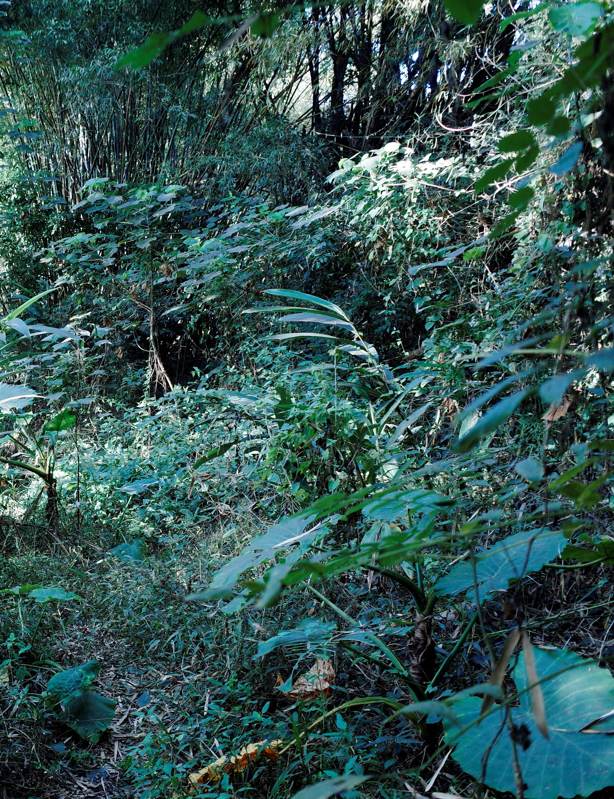
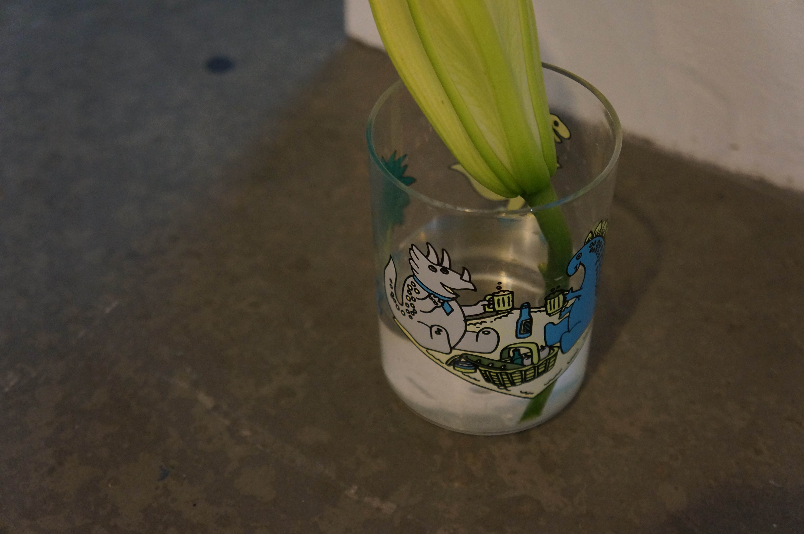
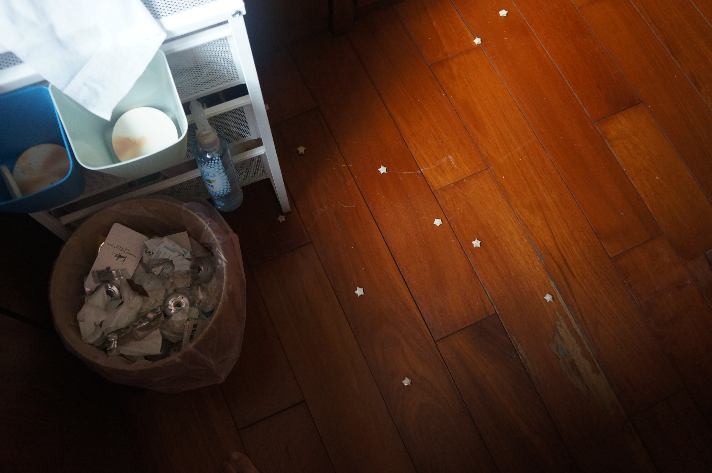
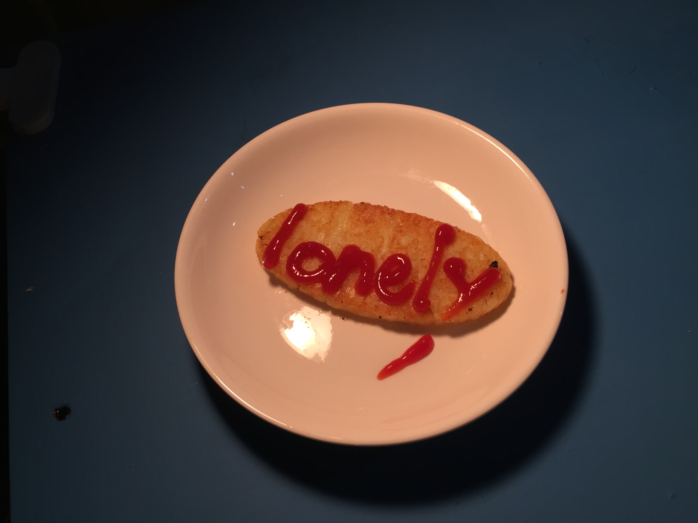
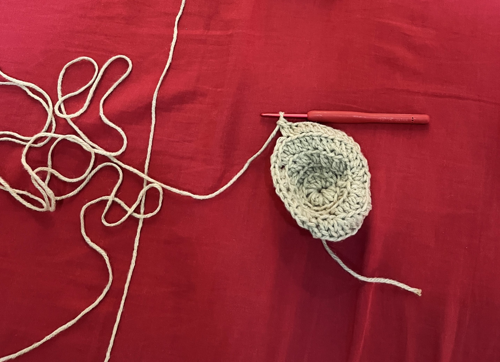
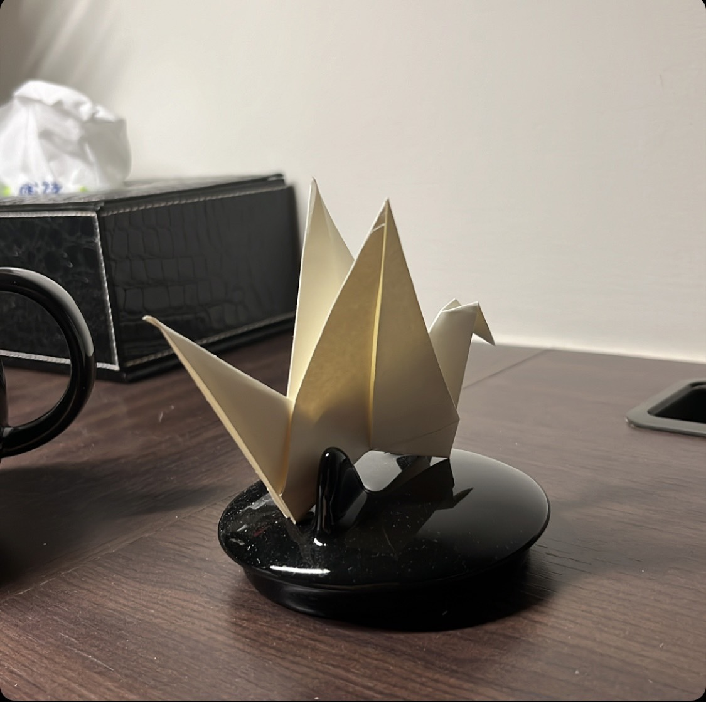
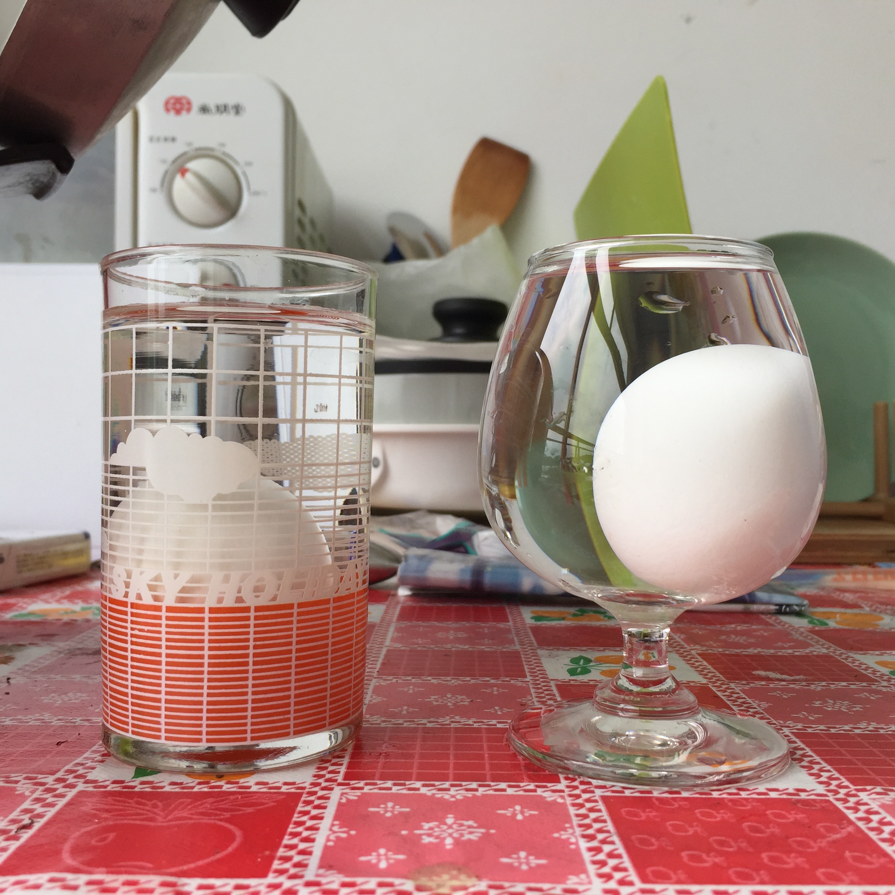
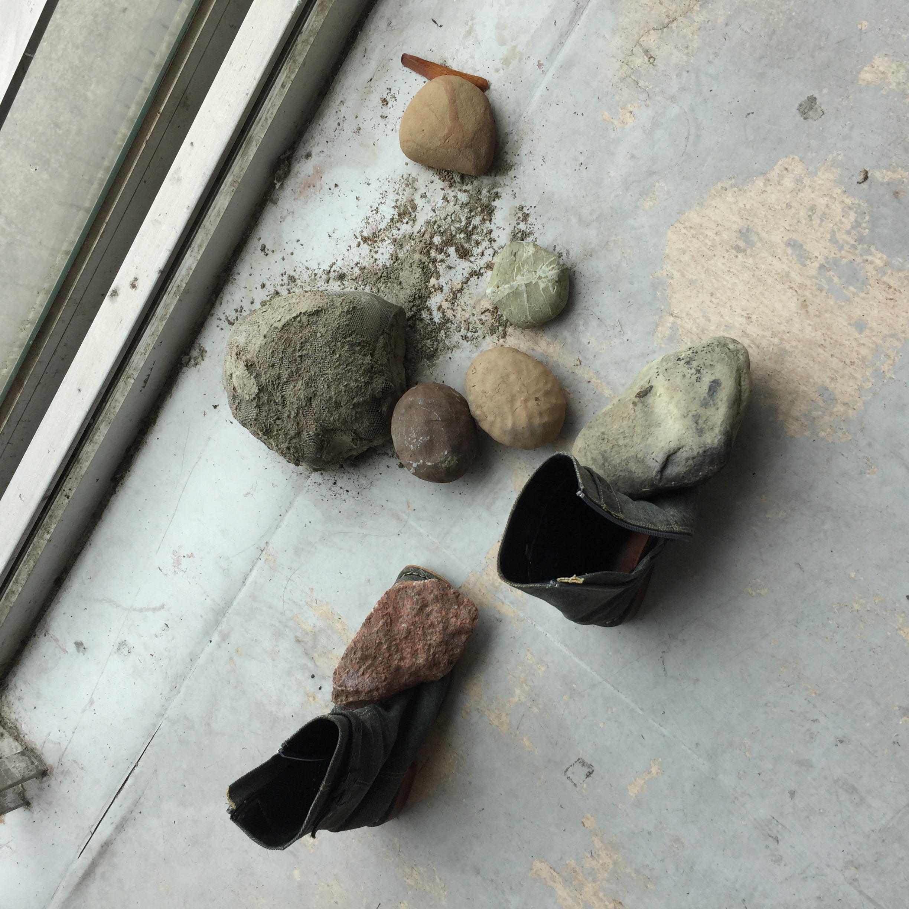
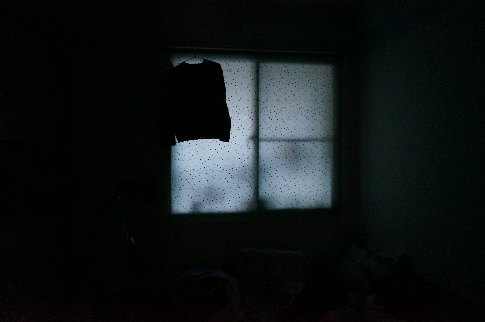

紙的遊戲
摺紙的記憶與他人有關
修理鞋子
我的創作時常從不期而遇的經驗開始，也來自於對環境的觀察與感受，並沿著偶然浮現的線索展開。我以低限度且細膩的方式進行創作，它可能是空間中一扇被打開的門、脆弱的東西、一段記憶、一段獨白或一群人在夜裡散步。
CV
Email: peihua841017@gmail.com
蔡沛樺 Tsai, Pei Hua臺灣，1995 / Taiwan, 1995
最近我開始拍照。
來自於生活狀態的改變，也成為我回看自己的一種方式。在拍照的過程中，我暫時成為一名觀察者，與世界保持距離，同時又以另一種方式，親密地投入。
在2025 年的一次實地採訪中，我在花蓮遇到了一對從事有機耕作的夫妻。他們的田裡沒有垂直水平的排列，不澆水也不施肥——他們在想的是：人類在自然中的位置到底是什麼？透過監測，他們僅僅只是在照護土壤，任由萬物自然生長。
在觀察與停留中，事物之間的關係隨時間慢慢浮現。
